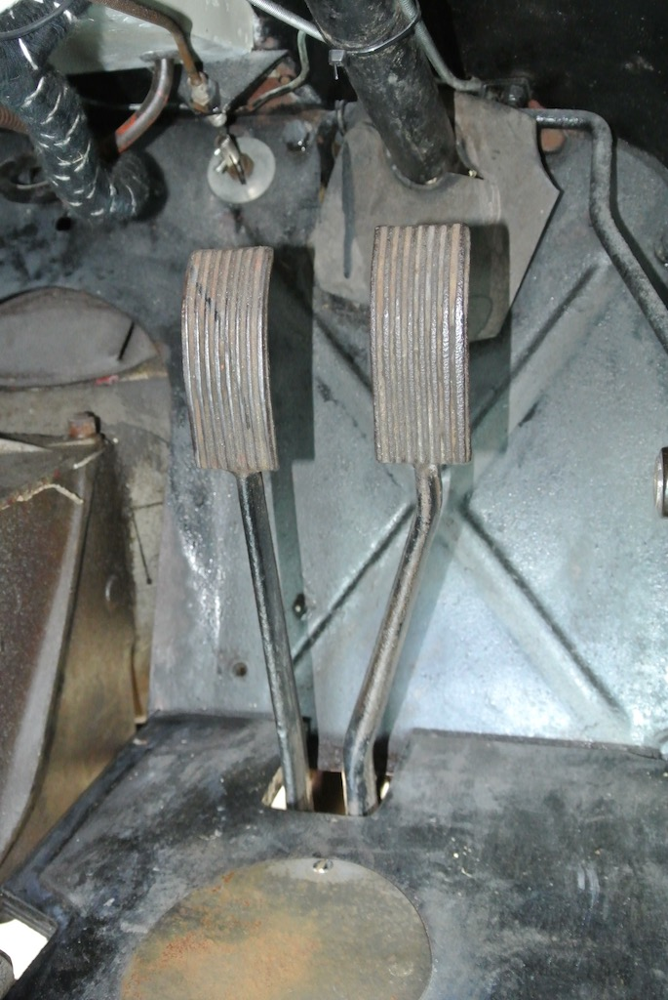

Fitting Pedals Draft Excluder
When I bought TC4985 in June 2015 there were no rubbers on the brake and clutch pedals and no draught excluder around the base of the pedal's stems. So one of the first things that I bought were two pedal rubbers and the excluder bellows. However, when I tried to fit the bellows I could not get them over the pedals. And when I tried fitting the pedal rubbers, one split!
 Then in October 2017 I found a video by Doug Pelton (of The Frame UP) that showed how they fit the bellows. Since I was waiting for the rear hub and half shaft I decided to have another go at fitting the excluder. Doug's video used a partly assembled car with no steering column or wheel. So they had easy access. However, I made two 'flattened cones' from some scrap aluminium and pushed them over the pedals. After coating them in grease I was able to pull the bellows over the pedals.
Then in October 2017 I found a video by Doug Pelton (of The Frame UP) that showed how they fit the bellows. Since I was waiting for the rear hub and half shaft I decided to have another go at fitting the excluder. Doug's video used a partly assembled car with no steering column or wheel. So they had easy access. However, I made two 'flattened cones' from some scrap aluminium and pushed them over the pedals. After coating them in grease I was able to pull the bellows over the pedals.
The final photo shows the draught excluder in place, with one of the pedal rubbers fitted. I glued the split in the other rubber and then fitted it. I then needed to cut the carpet around the bellows.

© David James 2017 Last updated: 16th November 2017